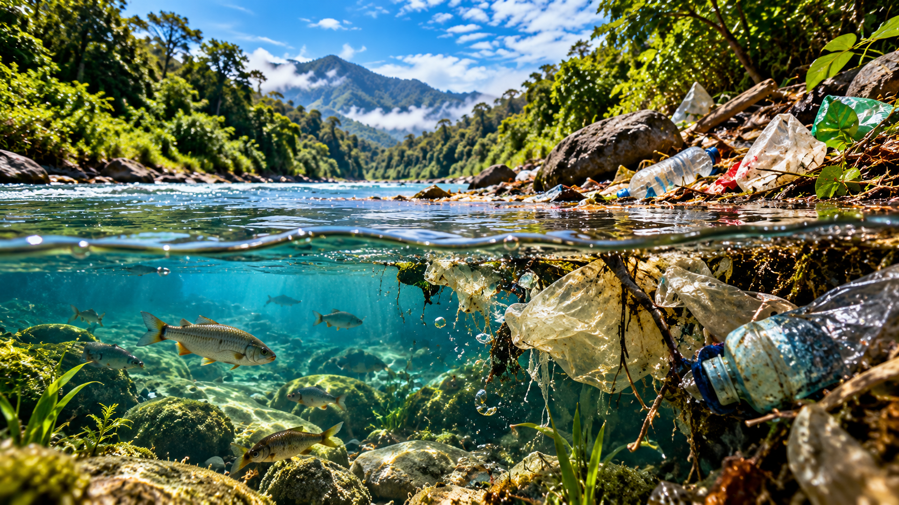

🌎 Selecciona un tema para aprender
Recursos hídricos
Contaminación del agua

📘 ¿Qué debemos conocer?
⚠️ ¿Por qué es importante?
🌱 ¿Qué podemos hacer?
🖼️ Galería del tema
🎬 Aprende también con videos
💡 Ideas que vale la pena recordar
Juego 1 · Pon a prueba lo aprendido
🧠 El reto de la biodiversidad
Responde las preguntas sobre el tema que estás estudiando. Selecciona una opción por pregunta y comprueba tus resultados.
Juego 2 · Encuentra las palabras
🔎 Sopa de letras ambiental
Busca las cinco palabras relacionadas con el tema. Selecciona la primera y la última letra. Las palabras pueden estar en horizontal, vertical o diagonal, incluso en sentido inverso.
¡Encuentra todas las palabras!